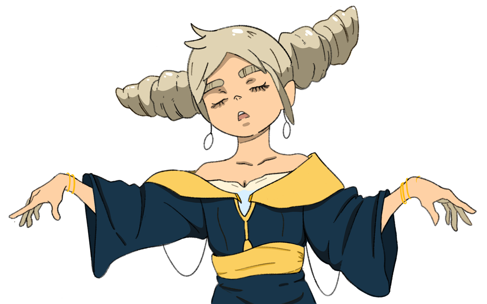

03.
PROJECT VEIL CHARACTER
Aurelia CC carries a calm, divine presence. Her power lies in control, influence, and quiet authority, making her one of the most mysterious figures within Project VEIL.
ROLE
